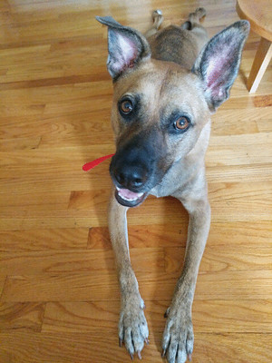

Purebreds are dogs with a documented pedigree. According to their website, the American Kennel Club, also known as AKC, "manages and registers purebred dogs"
The AKC divides purebred dogs into seven categories. These seven categories are Sporting Group, Hound Group, Working Group, Terrior Group, Toy Group, Non-Sporting Group, Herding Group.
Wally is a purebred Shih Tzu. Shih Tzus are apart of the toy group. Image via Sabrina Venturini
About the American Kennel Club
The American Kennel Club This organization has events and shows for purebred dogs.
The organization was founded in 1884.
AKC's goal is to "manage and register purebred dogs"
The AKC categorizes dogs into eight different groups. These groups are:
Herding Group
Sporting Group
Toy Group
Working Group
Hound Group
Non-Working Group
Terrier Group
Miscellaneous Group
For more information about the American Kennel Club, check out its website here"
Hybrids
Hybrid dogs are an intentional mix of two purebred dogs. The most popular hybrid dog is a Yorkipoo,the mix of a Yorkshire Terrior and a Poodle.
Other popular hybrid dogs are Cockapoos and Buggs. My family chose to get a Golden Doodle because we like the temperment of Golden Retrievers but wanted a dog that would not shed.
According to purebred.com, hybrid dogs have grown increasingly popular because owners know exaclty what they are getting.
Kori is a mix of a golden retriever and standard poddle. Image via Phoebe Brenner
Mutts
Mutts are mixes of different breeds and cannot be identified as one breed. Mutts do not belond to one offically recognized breed.
Most Americans believe that Purebreds are the most popular dog, but in fact Mutts are the most commonly own dog in the United States.
Angela Hughes, veterinary genetics research manager at Mars Veterinary explains Mutt trends, “the DNA of America’s mixed-breed dogs tells a story of which breeds were popular in past decades. If a breed was trendy in the past, but has fallen from popularity, it may still represent a large portion of the current mixed-breed population.”

Nala is a shepard-boxer mix. Image via David Talley
About Helping Hounds
Helping Hounds Dog Rescue is a non-profit organization located in Syracuse, NY.
The organization's mission is to help dogs in over crowded shelters find loving homes.
Helping hounds was founded in 2009. The organization relies on volunteers and donations to ensure these dogs the best quality of life.
HHDR brings in dogs from around the country as well as locally.
Its website lists dogs that are available for adoption and information about how to start the adoption process.
Before adopting a dog, Helping Hounds says you should consider the following:
Are you ready to make a 10 to 15 year commitment?
Are you financially able to care for a dog?
Who will care for your dog when you are not at home?
Is anyone in your household allergic to pets?
Are you able to walk, feed, and train your dog?
If you answered yes to these questions, you may be ready to start the adoption process/
For more information about helping hounds, check out its website here.